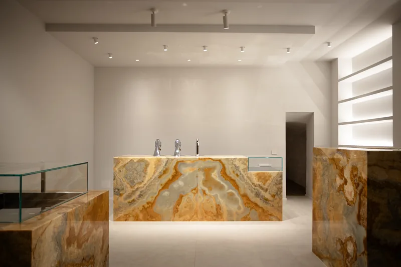
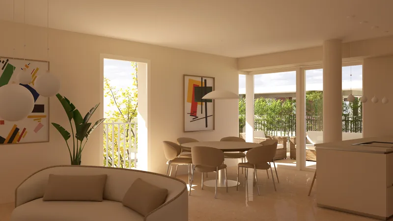

Leistungen
Das Studio begleitet jedes Projekt vom ersten Ortstermin bis zum Abschluss der Bauarbeiten. Es hat seinen Sitz in Modena und arbeitet in ganz Italien an Wohnungen, Gewerberäumen und historischen Gebäuden, für Kunden in Italien und im Ausland.
Sanierung von Wohnungen
Planung und Bauleitung für die Sanierung von Häusern und Wohnungen, vom Grundriss bis zu Haustechnik und Oberflächen. In der Via Carteria in der Altstadt von Modena wird eine Wohnung in zwei Wohnungen aufgeteilt.
Bars, Restaurants und Geschäfte
Planung von Bars, Restaurants, Geschäften und Gewerberäumen: Grundriss, Theken und Maßmöbel, Genehmigungen und Bauleitung.
Historische Gebäude und UNESCO-Welterbe
Eingriffe in historische Gebäude und in UNESCO-Welterbestätten, mit Sensibilität und Respekt vor dem Bestehenden. Wo nötig übernimmt das Studio die Abstimmung mit der Denkmalbehörde (Soprintendenza).
Innenarchitektur und Maßmöbel
Innenarchitektur und Maßmöbel: Küchen, Bäder, Bücherregale, Theken. Das Studio plante die Innenräume der Wohnungen von Le Pietre, einem neuen Wohngebäude in Castelfranco Emilia.
Baugenehmigungen und Bauleitung
Die passende Genehmigung für jedes Vorhaben nach italienischem Baurecht (CILA, SCIA oder Baugenehmigung), die Abstimmung mit der Gemeinde und die Bauleitung bis zum Abschluss.
Kunden aus dem Ausland
Kommunikation auf Englisch und Italienisch und Projekte, die sich aus der Ferne verfolgen lassen, mit Videocalls, Renderings, Virtual Reality und Videos; Reisen nach Italien nur in wichtigen Momenten. Das Studio übernimmt die italienischen Genehmigungen und die Abstimmung mit den Behörden. Mehr dazu: Ein Haus in Italien aus dem Ausland sanieren.
Renderings und Virtual Reality
Renderings und Virtual-Reality-Rundgänge, um einen Raum vor dem Bau zu sehen und gemeinsam zu entscheiden, in Zusammenarbeit mit VISION, einem Studio in Modena, das auf Architekturvisualisierung spezialisiert ist.
Projekte

Zwei Wohnungen

Bar und Restaurant

Bar und Restaurant

Innenarchitektur, Wohnungen
Von der Bestandsaufnahme bis zur Baustelle
- Ortstermin und Bestandsaufnahme
- Entwurf mit Varianten zum Vergleich
- Renderings und Virtual Reality
- Genehmigungsverfahren
- Ausführungsplanung und Maßmöbel
- Bauleitung
Kontakt
Um über ein Projekt zu sprechen, schreiben Sie an info@samuelesilvestriarchitetto.com oder rufen Sie +39 366 493 8286 an. Das Studio befindet sich in der Via Asiago 58 in Modena, arbeitet in ganz Italien und kommuniziert auf Englisch und Italienisch.